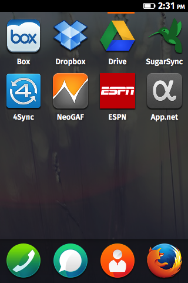

Firefox OS webapps
How to get an app on a demo device/Firefox OS Simulator:
https://blog.mozilla.org/apps/2012/12/04/how-to-get-your-app-on-a-demo-device/
Use this site:
http://testno.de/mozilla/

These are unofficial webapps. I focused on web sites that have mobile versions that display properly on the Firefox OS browser. The webapps just redirect to the sites listed below. I've included links to the projects on Github so that you can see exactly what they are doing.
Cloud apps
Box
Redirects to: https://m.box.com
Webapp manifest file: http://box-eisnerguy1.github.com/manifest.webapp
Source of the webapp: https://github.com/box-eisnerguy1/box-eisnerguy1.github.com
Dropbox
Redirects to: https://www.dropbox.com/m
Webapp manifest file: http://dropbox-eisnerguy1.github.com/manifest.webapp
Source of the webapp: https://github.com/dropbox-eisnerguy1/dropbox-eisnerguy1.github.com
Drive
Redirects to: https://drive.google.com/fe/m
Webapp manifest file: http://drive-eisnerguy1.github.com/manifest.webapp
Source of the webapp: https://github.com/drive-eisnerguy1/drive-eisnerguy1.github.com
SugarSync
Redirects to: https://m.sugarsync.com
Webapp manifest file: http://sugarsync-eisnerguy1.github.com/manifest.webapp
Source of the webapp: https://github.com/sugarsync-eisnerguy1/sugarsync-eisnerguy1.github.com
4Sync
Redirects to: https://m.4sync.com
Webapp manifest file: http://4sync-eisnerguy1.github.com/manifest.webapp
Source of the webapp: https://github.com/4sync-eisnerguy1/4sync-eisnerguy1.github.com
Other apps
NeoGAF Mobile
Redirects to: http://m.neogaf.com
Webapp manifest file: http://neogaf-eisnerguy1.github.com/manifest.webapp
Source of the webapp: https://github.com/neogaf-eisnerguy1/neogaf-eisnerguy1.github.com
ESPN Mobile
Redirects to: http://m.espn.go.com/
Webapp manifest file: http://espn-eisnerguy1.github.com/manifest.webapp
Source of the webapp: https://github.com/espn-eisnerguy1/espn-eisnerguy1.github.com
App.net
Redirects to: https://www.app.net
Webapp manifest file: http://appnet-eisnerguy1.github.com/manifest.webapp
Source of the webapp: https://github.com/appnet-eisnerguy1/eisnerguy1.github.com